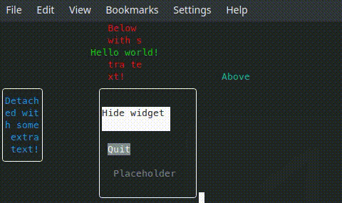
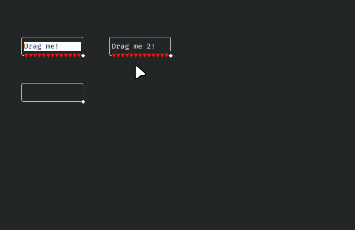
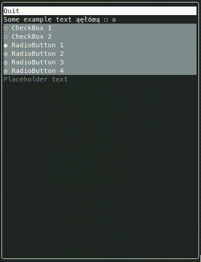

|
terminalgui
0.1.0
Widgets for your terminal, powered by Qt! Create textual GUI (TUI) in your console easily.
|
This project is in alpha stage
Widgets for your terminal, powered by Qt! Create textual GUI (TUI) in your console easily.



Full online documentation for Terminal GUI can be found here
Terminal GUI is very easy to use, especially if you know QtWidgets - many class names and APIs are similar.
For more information, check examples and go therough our developer guide.
What? Builds? Not available yet. It's still a very young project!
All that Terminal GUI requires is:
By default, TG builds itself as a set of libraries (core and widgets). It is easy to link to them (see examples/CMakeLists.txt). If you prefer, you can include all the sources in your code, too. The license is extremely permissive.
It just works, and looks great (in terminal emulators) - no worries!
Windows has poor UTF-8 support and poor fonts in default cmd.exe. Terminal GUI works but looks worse and is more glitchy than on Linux.
Recommendation: use the new Windows Terminal: link.
Windows PowerShell also seems to work pretty well.
Works well. The only missing feature is mouse position tracking, so dragging Widgets to move or resize them does not work.
See LICENSE.md - TG is available under WTFPL. It links to Qt, though, so you need to keep that in mind.
1.8.18